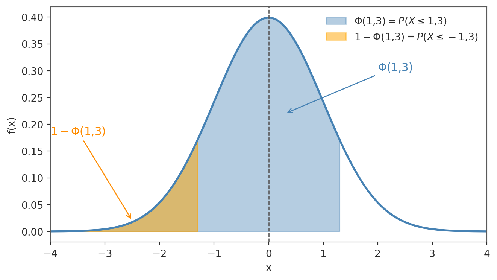
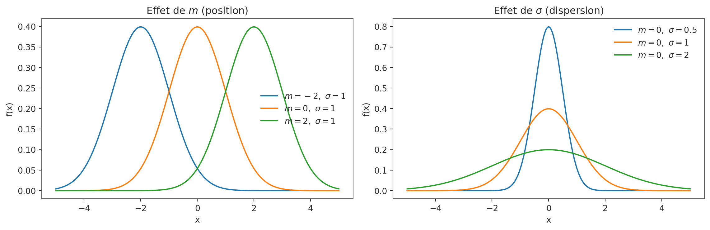
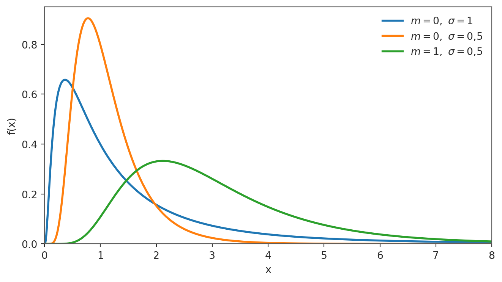
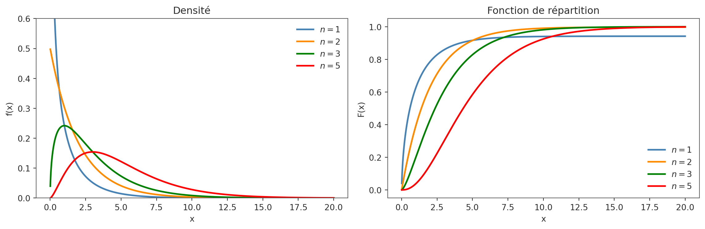
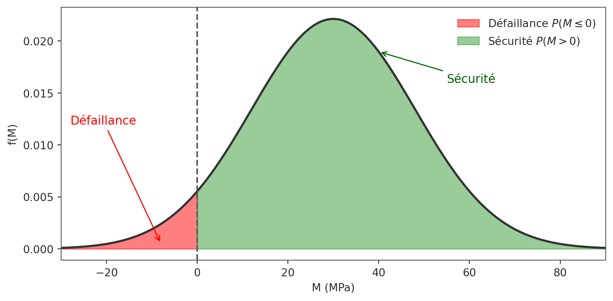

Loi normale et applications
Abstract
Ce chapitre présente la loi normale, modèle central en probabilités et en statistique. On introduit d’abord la loi normale centrée réduite \(\mathcal{N}(0,1)\), sa densité en cloche et sa fonction de répartition \(\Phi\), puis les règles de calcul associées (symétrie, lecture directe et inverse des probabilités). On généralise ensuite à la loi \(\mathcal{N}(m,\sigma^2)\) et à la standardisation, outil clé pour ramener tout calcul à la table de \(\Phi\). Le chapitre inclut les propriétés fondamentales (espérance, variance, somme de normales indépendantes) et se prolonge par deux applications classiques : la loi log-normale et la loi du khi-deux.
Dans tout ce chapitre, nous nous plaçons dans un espace probabilisé quelconque \((\Omega, \mathcal{F}, P)\).
I - Loi normale centrée réduite \(\mathcal{N}(0,1)\)
Définition
Une variable aléatoire réelle \(X\) suit la loi normale centrée réduite, notée \(\mathcal{N}(0,1)\), si sa densité est \[f_X(x) = \frac{1}{\sqrt{2\pi}}\exp\left(-\frac{x^2}{2}\right), \quad x \in \mathbb{R}.\]
Cette densité est positive, intégrée à 1 sur \(\mathbb{R}\), et paire. La courbe de \(f_X\) est donc symétrique par rapport à l’axe des ordonnées. En particulier : \[P(X \leq 0) = P(X \geq 0) = \frac{1}{2}.\]
Le qualificatif « centrée » signifie que l’espérance vaut 0 (la distribution est équilibrée autour de l’origine), et « réduite » signifie que la variance vaut 1 (et donc l’écart-type vaut également 1). La courbe en cloche atteint son maximum en \(x = 0\), présente des points d’inflexion en \(x = \pm 1\), et ses queues décroissent plus vite que toute puissance de \(x\) : la quasi-totalité de la masse est concentrée dans l’intervalle \([-3, 3]\). Bien que la primitive de \(e^{-x^2/2}\) ne soit pas une fonction élémentaire, l’intégrale sur \(\mathbb{R}\) vaut exactement 1 — ce qui s’établit par l’astuce de Poisson (passage en coordonnées polaires d’une intégrale double). La loi \(\mathcal{N}(0,1)\) est la distribution de référence à partir de laquelle toutes les autres lois normales sont déduites par simple changement de localisation et d’échelle.
Définition - Fonction de répartition
Si \(X \sim \mathcal{N}(0,1)\), on note \[\Phi(x) = P(X \leq x) = \int_{-\infty}^x \frac{1}{\sqrt{2\pi}}\exp\left(-\frac{t^2}{2}\right)dt.\]
La primitive de \(e^{-t^2/2}\) n’étant pas élémentaire, les valeurs de \(\Phi\) se lisent en pratique dans une table, via calculatrice ou logiciel.
La fonction \(\Phi\) est strictement croissante de 0 à 1 lorsque \(x\) parcourt \(\mathbb{R}\) de \(-\infty\) à \(+\infty\) : \(\Phi(x)\) représente l’aire sous la cloche à gauche du point \(x\), grandeur toujours comprise entre 0 et 1. Par convention, les tables ne donnent \(\Phi\) que pour \(x \geq 0\) ; les valeurs pour \(x < 0\) s’obtiennent grâce à la formule de symétrie \(\Phi(-x) = 1 - \Phi(x)\). L’importance pratique de \(\Phi\) est considérable : tout calcul de probabilité sur une loi normale se ramène à l’évaluation de \(\Phi\) en un ou deux points.
Propriétés utiles
Pour tout réel \(x\) :
- \(\Phi(-x) = 1 - \Phi(x)\),
- \(\Phi(0) = 0{,}5\),
- pour \(x > 0\), \(P(-x \leq X \leq x) = 2\Phi(x) - 1\).
Ces trois propriétés sont les outils de base pour tout calcul sur la loi \(\mathcal{N}(0,1)\). La première, \(\Phi(-x) = 1 - \Phi(x)\), traduit la symétrie de la cloche : l’aire à gauche de \(-x\) égale l’aire à droite de \(x\) ; c’est elle qui permet d’étendre la table (tabulée pour \(x \geq 0\)) aux valeurs négatives. La deuxième, \(\Phi(0) = 0{,}5\), n’est que l’expression de la symétrie globale : la moitié de la masse se trouve de chaque côté de l’origine. La troisième, \(P(-x \leq X \leq x) = 2\Phi(x) - 1\), donne directement la probabilité d’un intervalle symétrique : on double l’aire du côté droit, puis on soustrait la demie-masse centrale.
Exemple 1 - Lecture de table pour \(\mathcal{N}(0,1)\)
Soit \(X \sim \mathcal{N}(0,1)\).
- Calculer :
- \(P(X \leq 1{,}3)\),
- \(P(X > 0{,}22)\),
- \(P(X < -1{,}57)\),
- \(P(-1{,}5 \leq X \leq 2{,}2)\),
- \(P(-1{,}96 \leq X \leq 1{,}96)\),
- \(P(-2{,}58 \leq X \leq 2{,}58)\).
- Déterminer les réels \(a,b,c,d\) tels que :
- \(P(X \leq a)=0{,}1251\),
- \(P(X > b)=0{,}2327\),
- \(P(0 < X < c)=0{,}4984\),
- \(P(-d \leq X \leq d)=0{,}95\).
Solution - Exemple 1
La table de \(\Phi\) donne directement les probabilités pour les valeurs positives. Pour les valeurs négatives, on utilise la symétrie : \(\Phi(-x) = 1 - \Phi(x)\). Pour un intervalle \([a, b]\), on écrit \(P(a \leq X \leq b) = \Phi(b) - \Phi(a)\). En lecture inverse, on réécrit l’événement sous la forme \(P(X \leq t) = p\) afin de retrouver \(t = \Phi^{-1}(p)\) dans la table.
Avec la table de \(\Phi\) :
- \(P(X \leq 1{,}3)=\Phi(1{,}3)\approx 0{,}9032\).
- \(P(X > 0{,}22)=1-\Phi(0{,}22)\approx 1-0{,}5871=0{,}4129\).
- \(P(X < -1{,}57)=\Phi(-1{,}57)=1-\Phi(1{,}57)\approx 0{,}0582\).
- \(P(-1{,}5 \leq X \leq 2{,}2)=\Phi(2{,}2)-\Phi(-1{,}5)\approx 0{,}9193\).
- \(P(-1{,}96 \leq X \leq 1{,}96)=2\Phi(1{,}96)-1\approx 0{,}95\).
- \(P(-2{,}58 \leq X \leq 2{,}58)=2\Phi(2{,}58)-1\approx 0{,}9901\).
Lecture inverse :
- \(a \approx -1{,}15\) car \(\Phi(-1{,}15)=0{,}1251\).
- \(b \approx 0{,}73\) car \(1-\Phi(b)=0{,}2327 \iff \Phi(b)=0{,}7673\).
- \(c \approx 2{,}95\) car \(\Phi(c)-0{,}5=0{,}4984 \iff \Phi(c)=0{,}9984\).
- \(d \approx 1{,}96\) car \(2\Phi(d)-1=0{,}95\).
Proposition
Si \(X \sim \mathcal{N}(0,1)\), alors \[E(X)=0 \quad \text{et} \quad \mathrm{Var}(X)=1.\]
L’espérance \(E(X) = 0\) s’obtient en remarquant que l’intégrande \(x \mapsto x f_X(x)\) est une fonction impaire, dont l’intégrale sur \(\mathbb{R}\) est nulle. La variance \(\mathrm{Var}(X) = E(X^2) = 1\) se calcule par une intégration par parties qui ramène \(\int x^2 e^{-x^2/2} dx\) à l’intégrale gaussienne usuelle. Ces deux valeurs justifient la terminologie : « centrée » pour \(E(X)=0\) et « réduite » pour \(\mathrm{Var}(X)=1\) (soit un écart-type égal à 1). La loi \(\mathcal{N}(0,1)\) est ainsi le représentant canonique de la famille des lois normales, à partir duquel tous les autres se déduisent par transformation linéaire.
II - Loi normale générale \(\mathcal{N}(m,\sigma^2)\)
Définition
Soient \(m \in \mathbb{R}\) et \(\sigma > 0\). On dit que \(X\) suit la loi normale \(\mathcal{N}(m,\sigma^2)\) si sa densité est \[f_X(x)=\frac{1}{\sigma\sqrt{2\pi}}\exp\left(-\frac{(x-m)^2}{2\sigma^2}\right), \quad x\in\mathbb{R}.\]
Ici, \(m\) est le paramètre de position (centre), et \(\sigma\) contrôle la dispersion autour de \(m\).
Le paramètre \(m\) déplace la courbe en cloche vers la gauche ou vers la droite sans en modifier la forme ; \(\sigma\) en change l’échelle : un grand \(\sigma\) donne une courbe aplatie et étalée, un petit \(\sigma\) donne une courbe étroite et pointue. Le maximum de \(f_X\) est atteint en \(x = m\) (c’est aussi le mode et la médiane), et les points d’inflexion se trouvent en \(x = m \pm \sigma\). Le facteur \(\frac{1}{\sigma\sqrt{2\pi}}\) assure la normalisation : quelle que soient \(m \in \mathbb{R}\) et \(\sigma > 0\), l’intégrale de \(f_X\) sur \(\mathbb{R}\) vaut exactement 1. Enfin, si \(Z \sim \mathcal{N}(0,1)\), alors \(X = m + \sigma Z\) suit \(\mathcal{N}(m, \sigma^2)\) : la loi générale n’est qu’une version décalée et redimensionnée de la loi centrée réduite.
Proposition - Standardisation
Si \(X \sim \mathcal{N}(m,\sigma^2)\), alors la variable \[Z=\frac{X-m}{\sigma}\] suit \(\mathcal{N}(0,1)\).
Réciproquement, si \(Z \sim \mathcal{N}(0,1)\), alors \(X=m+\sigma Z\) suit \(\mathcal{N}(m,\sigma^2)\).
Cette proposition est l’outil central de calcul : toute probabilité sur une loi normale se ramène à une lecture de \(\Phi\).
Géométriquement, standardiser revient à re-centrer la distribution en 0 et à la comprimer ou dilater pour que son écart-type vaille 1 : on passe ainsi de n’importe quelle loi \(\mathcal{N}(m, \sigma^2)\) à la loi de référence \(\mathcal{N}(0,1)\). Grâce à cette transformation, une seule table (celle de \(\Phi\)) suffit pour calculer des probabilités sur toutes les lois normales. Le schéma de calcul est le suivant : \(P(X \leq a) = P\!\left(Z \leq \dfrac{a - m}{\sigma}\right) = \Phi\!\left(\dfrac{a - m}{\sigma}\right)\). La quantité \(\dfrac{a - m}{\sigma}\) est appelée la valeur centrée réduite (ou z-score) de \(a\) : elle indique de combien d’écarts-types \(a\) se trouve au-dessus (ou en dessous) de la moyenne \(m\). Cette transformation est linéaire, ce qui préserve la normalité et rend la standardisation exacte (et non approximative).

Exemple 2 - Calculs sur une loi normale générale
- Soit \(X \sim \mathcal{N}(30,9)\). Calculer :
- \(P(X>36)\),
- \(P(25 \leq X \leq 35)\).
- Soit \(X \sim \mathcal{N}(90,400)\). Déterminer :
- \(k\) tel que \(P(X<k)=0{,}9798\),
- \(k'\) tel que \(P(X>k')=0{,}6026\),
- un intervalle \(I\) centré en 90 tel que \(P(X\in I)=0{,}85\).
Solution - Exemple 2
La méthode universelle est la standardisation : on pose \(Z = (X-m)/\sigma\), qui suit \(\mathcal{N}(0,1)\), et on se ramène à une lecture de \(\Phi\). Pour les problèmes inverses, on isole d’abord le quantile de \(Z\) dans la table, puis on retrouve la valeur de \(X\) en appliquant \(X = m + \sigma Z\).
1. \(X \sim \mathcal{N}(30,9)\) donc \(\sigma=3\) et \(Z=(X-30)/3 \sim \mathcal{N}(0,1)\).
- \(P(X>36)=P\!\left(Z>\frac{36-30}{3}\right)=P(Z>2)=1-\Phi(2)\approx 0{,}0228\).
- \(P(25 \leq X \leq 35)=P\!\left(-\frac{5}{3} \leq Z \leq \frac{5}{3}\right) \approx 2\Phi(1{,}67)-1 \approx 0{,}9044\).
2. \(X \sim \mathcal{N}(90,400)\) donc \(\sigma=20\).
- \(P(X<k)=0{,}9798 \Rightarrow \dfrac{k-90}{20}=2{,}05\), donc \(k=131\).
- \(P(X>k')=0{,}6026 \Rightarrow P(X\leq k')=0{,}3974\), donc \(\dfrac{k'-90}{20}\approx -0{,}26\) et \(k'\approx 84{,}8\).
- On cherche \(I=[90-a,90+a]\) avec \(P(|X-90|\leq a)=0{,}85\). En standardisant : \(P(|Z|\leq a/20)=0{,}85\), donc \(2\Phi(a/20)-1=0{,}85\), d’où \(\Phi(a/20)=0{,}925\) et \(a/20\approx 1{,}44\). Ainsi \(a\approx 28{,}8\), et \(I\approx[61{,}2\,;\,118{,}8]\).
Proposition
Si \(X \sim \mathcal{N}(m,\sigma^2)\), alors \[E(X)=m \quad \text{et} \quad \mathrm{Var}(X)=\sigma^2.\]
Ces résultats confirment l’interprétation des paramètres : \(m\) est bien le centre de masse (l’espérance) et \(\sigma\) est l’écart-type, mesure directe de la dispersion typique de \(X\) autour de sa moyenne. On les obtient à partir du cas \(\mathcal{N}(0,1)\) par la transformation linéaire \(X = m + \sigma Z\) : \(E(X) = m + \sigma \cdot E(Z) = m\) et \(\mathrm{Var}(X) = \sigma^2 \cdot \mathrm{Var}(Z) = \sigma^2\). Ces formules sont cohérentes avec le cas particulier \(\mathcal{N}(0,1)\) où \(m = 0\) et \(\sigma = 1\), et elles montrent que les paramètres de la loi ont une signification statistique immédiate et intuitive.
Proposition (admise) - Somme de normales indépendantes
Si \(X_1,\dots,X_n\) sont indépendantes et \(X_i\sim\mathcal{N}(m_i,\sigma_i^2)\), alors \[Y=\sum_{i=1}^n X_i \sim \mathcal{N}\left(\sum_{i=1}^n m_i,\sum_{i=1}^n \sigma_i^2\right).\]
Cette propriété de stabilité signifie que la famille des lois normales est fermée par addition de variables indépendantes : une somme de normales indépendantes reste normale. La nouvelle espérance est la somme des espérances (par linéarité), et la nouvelle variance est la somme des variances (par indépendance). Attention : ce sont bien les variances qui s’additionnent, et non les écarts-types. Cette propriété est fondamentale en pratique pour modéliser la somme de nombreuses contributions indépendantes (erreurs de mesure, fluctuations aléatoires, etc.). Le résultat est « admis » car sa démonstration fait appel aux fonctions caractéristiques ou à la convolution des densités, outils qui dépassent le cadre de ce cours.
Exemple 3
Lors d’un test, 70 % des individus ont un score inférieur à 60. On suppose une loi normale d’écart-type 20. Déterminer l’espérance \(m\).
Solution - Exemple 3
Il s’agit d’un problème inverse : on connaît la probabilité et on cherche le paramètre \(m\). Après standardisation, la condition \(P(X \leq 60) = 0{,}70\) signifie que la valeur standardisée \(\dfrac{60-m}{20}\) doit coïncider avec le quantile d’ordre \(0{,}70\) de \(\mathcal{N}(0,1)\), que l’on lit dans la table de \(\Phi\).
Si \(X\sim\mathcal{N}(m,20^2)\) et \(P(X\leq 60)=0{,}70\), alors \[\frac{60-m}{20}=z_{0{,}70}\approx 0{,}5244.\] Donc \[m \approx 60-20\times 0{,}5244 \approx 49{,}5.\]
Exemple 4
Soient \(X\) et \(Y\) indépendantes de loi \(\mathcal{N}(0,2)\). Calculer \(P(X+Y\leq 1)\).
Solution - Exemple 4
La propriété de stabilité de la loi normale garantit que la somme de variables aléatoires normales indépendantes est encore une variable normale. Il suffit donc d’additionner les espérances et les variances (et non les écarts-types) pour identifier la loi de \(X+Y\).
Par stabilité de la loi normale, \[X+Y \sim \mathcal{N}(0,4).\] Donc \[P(X+Y\leq 1)=P\left(\frac{X+Y}{2}\leq \frac12\right)=\Phi(0{,}5)\approx 0{,}6915.\]
III - Application : loi log-normale
Définition
On dit que \(X\) suit une loi log-normale de paramètres \(m\in\mathbb{R}\) et \(\sigma>0\) si \[\ln(X)\sim\mathcal{N}(m,\sigma^2).\] En particulier, \(X>0\) presque sûrement.
De nombreuses quantités réelles sont strictement positives et ont un logarithme qui suit approximativement une loi normale : c’est le cas des prix d’actifs financiers, des tailles biologiques ou encore de certains revenus. Si \(\ln(X) \sim \mathcal{N}(m, \sigma^2)\), alors \(X = e^{\ln X}\) est obtenu en appliquant l’exponentielle à une variable normale, ce qui garantit \(X > 0\) presque sûrement. Il est important de noter que \(m\) et \(\sigma\) sont la moyenne et l’écart-type de \(\ln(X)\), et non de \(X\) lui-même : l’espérance de \(X\) vaut \(e^{m + \sigma^2/2}\), qui est toujours supérieure à \(e^m\) en raison de la convexité de l’exponentielle (inégalité de Jensen). Cette différence entre la moyenne et la médiane (qui vaut \(e^m\)) reflète l’asymétrie à droite caractéristique de la loi log-normale.
Proposition
Si \(X\) est log-normale de paramètres \((m,\sigma)\), alors pour \(x>0\) : \[f_X(x)=\frac{1}{x\sigma\sqrt{2\pi}}\exp\left(-\frac{1}{2}\left(\frac{\ln x-m}{\sigma}\right)^2\right).\]
De plus, \[E(X)=e^{m+\sigma^2/2}, \qquad \mathrm{Var}(X)=e^{2m+\sigma^2}(e^{\sigma^2}-1).\]
Dans la formule de densité, le facteur \(1/x\) provient du changement de variable \(x \mapsto \ln x\) (jacobien de la transformation), et le reste n’est autre que la densité \(\mathcal{N}(m, \sigma^2)\) évaluée en \(\ln x\). La clé pour les calculs de probabilités est la relation \(P(X \leq a) = P(\ln X \leq \ln a) = \Phi\!\left(\dfrac{\ln a - m}{\sigma}\right)\), qui ramène tout calcul à une évaluation de \(\Phi\) après une simple transformation logarithmique. L’espérance \(E(X) = e^{m + \sigma^2/2}\) est strictement supérieure à la médiane \(e^m\) : la distribution est asymétrique à droite, avec quelques très grandes valeurs qui tirent la moyenne vers le haut.

Exemple 5
Soit \(X\) log-normale de paramètres \(m=1\) et \(\sigma=1\). Calculer \(P(X>1)\).
Solution - Exemple 5
L’idée clé est la transformation logarithmique : puisque \(\ln(X) \sim \mathcal{N}(1,1)\), tout événement portant sur \(X\) se traduit immédiatement en événement sur une variable normale. En particulier, \(P(X > 1) = P(\ln X > \ln 1) = P(\ln X > 0)\), ce qui ramène le calcul à la loi \(\mathcal{N}(1,1)\) puis, après standardisation, à \(\Phi\).
Comme \(\ln(X)\sim\mathcal{N}(1,1)\), \[P(X>1)=P(\ln(X)>0)=P(Z>-1)=\Phi(1)\approx 0{,}8413.\]
IV - Application : loi du khi-deux
Définition - 1 degré de liberté
Si \(Z\sim\mathcal{N}(0,1)\), alors \(Y=Z^2\) suit la loi du khi-deux à 1 degré de liberté, notée \(\chi^2_1\).
Élever une variable au carré ne peut donner qu’un résultat positif, ce qui explique que \(\chi^2_1\) soit une loi sur \((0, +\infty)\). Par symétrie de la loi \(\mathcal{N}(0,1)\), les valeurs \(Z\) et \(-Z\) produisent le même carré : la droite réelle se « replie » sur la demi-droite positive, concentrant en particulier de la masse près de 0. Cette loi apparaît naturellement en statistique dès que l’on calcule un carré de résidu ou un carré d’écart-type empirique, et constitue le fondement de la loi du khi-deux à \(n\) degrés de liberté.
Propriétés de \(\chi^2_1\)
La densité de \(Y\sim\chi^2_1\) est, pour \(x>0\), \[f_Y(x)=\frac{1}{\sqrt{2\pi}}x^{-1/2}e^{-x/2},\] et \[E(Y)=1, \qquad \mathrm{Var}(Y)=2.\]
L’espérance \(E(Y) = 1\) s’obtient immédiatement : \(Y = Z^2\) et \(E(Z^2) = \mathrm{Var}(Z) = 1\) pour \(Z \sim \mathcal{N}(0,1)\). La variance \(\mathrm{Var}(Y) = 2\) nécessite de calculer \(E(Z^4) = 3\) (moment d’ordre 4 de la loi normale), ce qui donne \(\mathrm{Var}(Z^2) = E(Z^4) - (E(Z^2))^2 = 3 - 1 = 2\). La densité \(f_Y\) est singulière en \(x = 0\) (elle tend vers \(+\infty\)) car le repliement de la droite réelle concentre une densité importante de masse près de 0, correspondant aux valeurs de \(Z\) proches de 0 de part et d’autre.
Définition - \(n\) degrés de liberté
Si \(Z_1,\dots,Z_n\) sont indépendantes et suivent toutes \(\mathcal{N}(0,1)\), alors \[X=\sum_{i=1}^n Z_i^2\] suit la loi \(\chi^2_n\).
La loi \(\chi^2_n\) est donc une somme de \(n\) variables indépendantes \(\chi^2_1\), ce qui en fait une généralisation naturelle du cas \(n = 1\). L’entier \(n\) est appelé le degré de liberté ; il contrôle la forme de la distribution : pour de petites valeurs de \(n\), la loi est fortement asymétrique à droite, tandis que pour de grandes valeurs de \(n\), elle s’approche d’une loi normale (par le théorème central limite). En statistique, \(\chi^2_n\) apparaît très naturellement comme la loi de la somme de \(n\) carrés de résidus standardisés, par exemple dans les tests d’indépendance sur des tableaux de contingence ou dans les tests d’ajustement.
Proposition
Si \(X\sim\chi^2_n\), alors \[E(X)=n \qquad \text{et} \qquad \mathrm{Var}(X)=2n.\]
L’espérance \(E(X) = n\) découle directement de la linéarité : \(X\) est la somme de \(n\) variables indépendantes \(Y_i \sim \chi^2_1\), chacune d’espérance 1, donc \(E(X) = n \cdot 1 = n\). De même, par indépendance, \(\mathrm{Var}(X) = n \cdot \mathrm{Var}(Y_i) = n \cdot 2 = 2n\). Lorsque \(n\) grandit, la moyenne croît linéairement tandis que l’écart-type ne croît qu’en \(\sqrt{2n}\) : le coefficient de variation \(\sigma/\mu = \sqrt{2n}/n \to 0\), ce qui signifie que la distribution se concentre relativement de plus en plus autour de sa moyenne. C’est précisément pourquoi, pour de grands degrés de liberté, la loi \(\chi^2_n\) est bien approchée par une loi normale.

Exemple 6 - Lecture de table \(\chi^2\)
Soit \(X\sim\chi^2_7\). À l’aide de la table :
- Calculer :
- \(P(X<4{,}255)\),
- \(P(X\geq 9{,}037)\),
- \(P(2{,}167\leq X\leq 12{,}02)\).
- Déterminer \(x\) tel que \(P(X<x)=0{,}1\).
Solution - Exemple 6
La table du \(\chi^2\) donne des quantiles : pour chaque degré de liberté \(n\), elle fournit des valeurs \(x\) telles que \(P(X < x) = p\) pour des probabilités \(p\) usuelles. La lecture est donc l’inverse de la table normale : on repère \(x\) dans le corps du tableau pour retrouver \(p\), ou on repère \(p\) pour retrouver \(x\) (lecture inverse). Pour \(n=7\), on lit directement les valeurs souhaitées dans la ligne correspondante.
Pour \(n=7\), la table donne approximativement :
- \(F(4{,}255)=0{,}25\),
- \(F(9{,}037)=0{,}75\),
- \(F(2{,}167)=0{,}10\),
- \(F(12{,}02)=0{,}90\).
Donc :
- \(P(X<4{,}255)=0{,}25\),
- \(P(X\geq 9{,}037)=1-0{,}75=0{,}25\),
- \(P(2{,}167\leq X\leq 12{,}02)=0{,}90-0{,}10=0{,}80\),
- le quantile d’ordre 0,1 vaut \(x=2{,}167\).
V - Exercice de synthèse
Exercice 7 - D’une mesure physique à une probabilité de dépassement
La résistance à la rupture (en MPa) d’un matériau est modélisée par une variable aléatoire \(R\) de loi normale \(\mathcal{N}(250,15^2)\). On considère la charge appliquée par une machine, modélisée par \(C\sim\mathcal{N}(220,10^2)\), indépendante de \(R\).
- Calculer \(P(R<230)\).
- Déterminer le seuil \(s\) tel que \(P(R\geq s)=0{,}10\).
- On définit la marge de sécurité \(M=R-C\).
- Déterminer la loi de \(M\).
- Calculer \(P(M>0)\) et interpréter le résultat.
Solution - Exercice 7
Cet exercice combine les trois usages principaux de la loi normale. Partie 1 : standardisation directe, puis lecture de \(\Phi\) (queue gauche). Partie 2 : lecture inverse — on réécrit \(P(R \geq s) = 0{,}10\) comme \(P(R \leq s) = 0{,}90\), puis on lit le quantile d’ordre \(0{,}90\) dans la table. Partie 3 : par indépendance, les variances de \(R\) et \(C\) s’additionnent (et non les écarts-types) pour obtenir la variance de \(M = R - C\) ; on standardise ensuite \(M\) pour exprimer \(P(M > 0)\) en termes de \(\Phi\).
Probabilité de résistance insuffisante \[P(R<230)=P\left(\frac{R-250}{15}<\frac{230-250}{15}\right)=P(Z<-1{,}33) \approx 0{,}0918.\]
Quantile à 90 % \[P(R\geq s)=0{,}10 \iff P(R\leq s)=0{,}90.\] Avec \(z_{0{,}90}\approx 1{,}28\), \[s=250+15\times 1{,}28\approx 269{,}2\ \text{MPa}.\]
Marge de sécurité
Comme \(R\) et \(C\) sont indépendantes et normales, \[M=R-C \sim \mathcal{N}(250-220,15^2+10^2)=\mathcal{N}(30,325).\] Donc \(\sigma_M=\sqrt{325}\approx 18{,}03\).
Alors \[P(M>0)=P\left(\frac{M-30}{18{,}03}>\frac{0-30}{18{,}03}\right) = P(Z>-1{,}66)=\Phi(1{,}66)\approx 0{,}9515.\]

Interprétation : dans ce modèle, la résistance dépasse la charge dans environ 95 % des cas.
À retenir
- La standardisation \(Z=(X-m)/\sigma\) est la clé de presque tous les calculs sur les lois normales.
- La loi normale est stable par somme de variables indépendantes.
- Les lois log-normale et khi-deux se construisent directement à partir de la loi normale.
- Les quantiles (lecture inverse) sont indispensables pour fixer des seuils de risque.